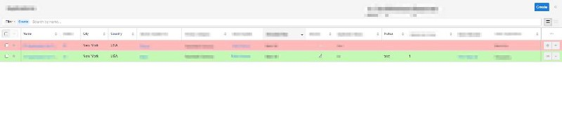

The tutorial shows you how to do two useful things in SugarCRM 7. Firstly, how to call actions when rows get updated in SugarCRM's recordlist and secondly, how to set information based on row data. The example I have here will essentially update the table colours based on a specific data value in each row. So say you have a drop-down with the values Red,Green,Orange and Yellow this will update the rows to the specified colour. The key call here is this.collection.on('data:sync:complete'), which essentially fires when the sidecar(read backbone), data sync is completed.
This code would go in custom/modules/
```javascript ({
this.collection.on('data:sync:complete', function() { this.render_colors(); }, this); }, render_colors : function() { setTimeout( function() { $("tr[name^='']").each(function () { //loop over each row if ($(this).find('div[data-original-title="Red"]').length > 0) { //check value of TD $(this).find($('td')).each(function () { $(this).css("background-color", "#FFBABA"); }); } else if ($(this).find('div[data-original-title="Green"]').length > 0) { $(this).find($('td')).each(function () { $(this).css("background-color", "#C3F8B5"); }); } else if ($(this).find('div[data-original-title="Orange"]').length > 0) { $(this).find($('td')).each(function () { $(this).css("background-color", "#FFCF8F"); }); } else if ($(this).find('div[data-original-title="Yellow"]').length > 0) { $(this).find($('td')).each(function () { $(this).css("background-color", "#FAFE8E"); }); } }); }, 1000); } }) ```
One thing you might note is the setTimeout with a delay of 1 second. This is simply because the table won't have rendered as soon as the sync has completed so a wait of a second was added to allow the browser to render the table, before iterating through the rows and setting the appropriate colours. I honestly just couldn't find any documentation or code samples to see if an even fired when the table gets re-rendered, but I'll update it here if I find a better solution.